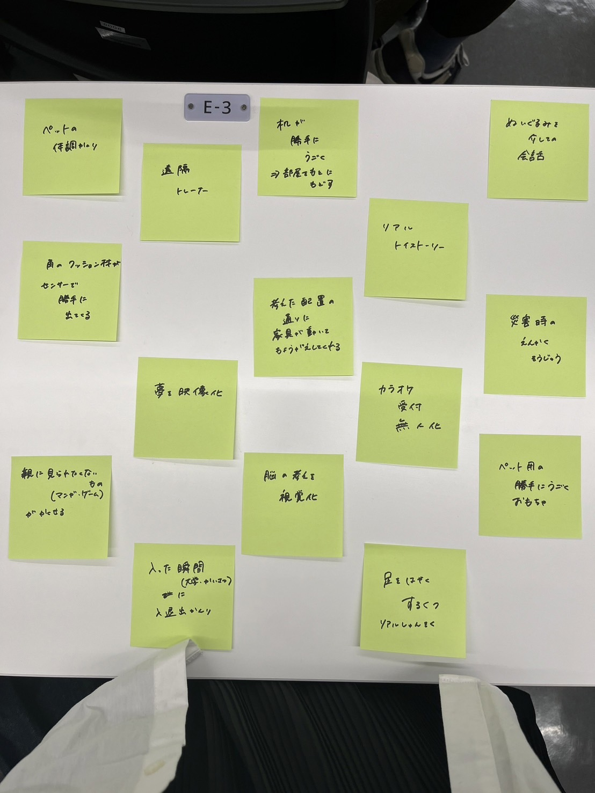

デザイン演習Ⅲ 第2回
1.IoTとは何か
IoT（アイ・オー・ティー）=Internet of Things=モノのインターネット
物にインターネットを接続し、動作環境やサービスを付け加えること。
インターネットを通じて情報交換し、モノを遠隔でも操ることができる。
2.実験動画
3.IoT(遠隔操作)で何ができそうか？グループワークした内容（ポストイット画像）

4.IoT(遠隔操作)で何ができそうか？自分で考えたアイディア（スケッチ）
赤ちゃんがなんで泣いてるのかわからなくて困っている時に役立つものを考えました。
何をしたいときにどんな泣き方をするのか撮影して情報を読み取らせ、パターンごとに教えてくれる音声機能も組み込んだ監視カメラを設置。
いざとなったときに何をすればいいか分かるように指示してくれるもの。
参考サイト
IoTとは何か
IoTについて